ScrimBOT - Documentation
- GAMING DISCORD BOT
Thank you for your purchasing this plugin for discord . If you have any questions that are beyond the scope of this help file, please feel free to email us via ...
Installation Requirement
- Installation requires the correct software and other factors. .
- All in One Runtimes
- .NET Core 3.1.28
- Create DataBase (MangeDB) *Free*
make your own discord bot
To create any Discord Bot you must first create an application over at here To do so, head over to Discord Developers and create an account if you do not already have one. Click on the New Application button to create a new application.
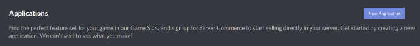
Next enter a Name for your Application. This will not be the name of your bot so you can give it any name you wish.
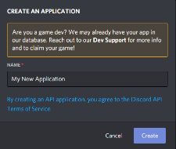
Finally click Create to finalize creating your Discord Application.
The next step to creating your own Discord Bot is to convert your Discord Application into a Bot Account. First on this new page, click the Bot tab on the left hand side menu.
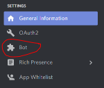
Once you are on this new page click the Add Bot button to create a bot. Click Yes, do it! To confirm.
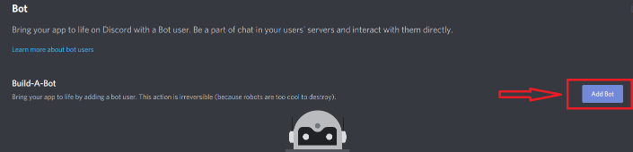

This will add a bot to your Discord Application. From this new page you can set your bots profile picture and display name. Your display name is the name people will see in discord and when inviting your bot to their discord server. Change the Username field to whatever you wish to name your bot. Click on Bot Icon to change your bot’s display picture. This is the image that will be displayed in Discord and when other people invite your Bot.
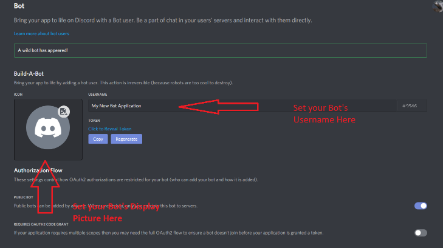
If you wish to set your bot to private you can do so by unchecking the Public Bot option. This will mean however that only you will be able to invite your bot to any server.
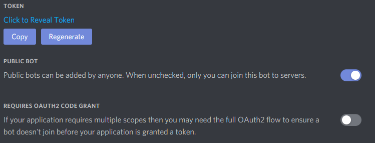
Ensure that Requires OAUTH2 Code Grant is unchecked. Failing to do so will mean that your bot will be unable to be invited to servers.
Privileged Gateway intents
are required for some bot functions to operate correctly. It is extremely important to ensure that both Presence Intent and Server Members Intent are both enabled. Failing to do so could mean that some vital
functions of your bot are unable to communicate correctly with the Discord API. Ensure that both Intents are enabled like below.
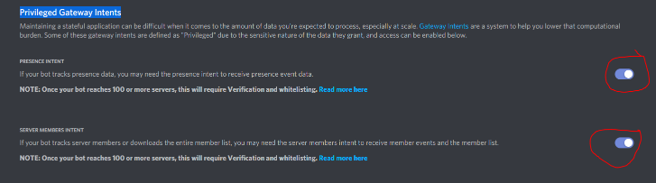
Getting a Token
To get your Bot’s Token simply click the Copy button under Token. You will later paste this into your BotGhost Dashboard.
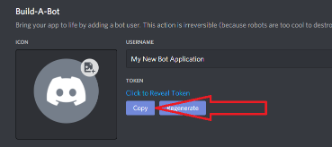
Adding your bot to server
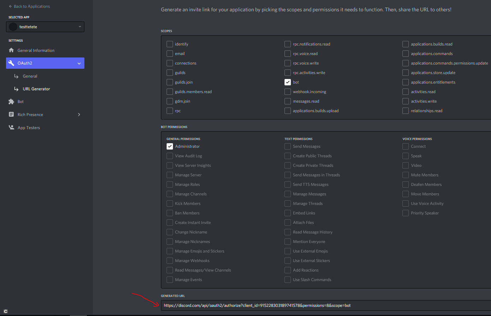
Grab the link via the "Copy" button and enter it in your browser. You should see something like this (with your bot's username and avatar)
put your token bot here and click connect
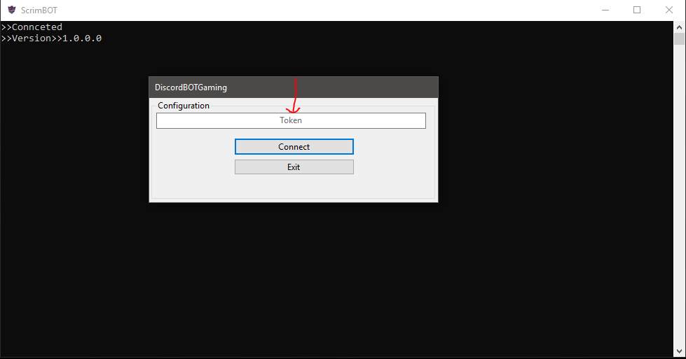
bot online now :)
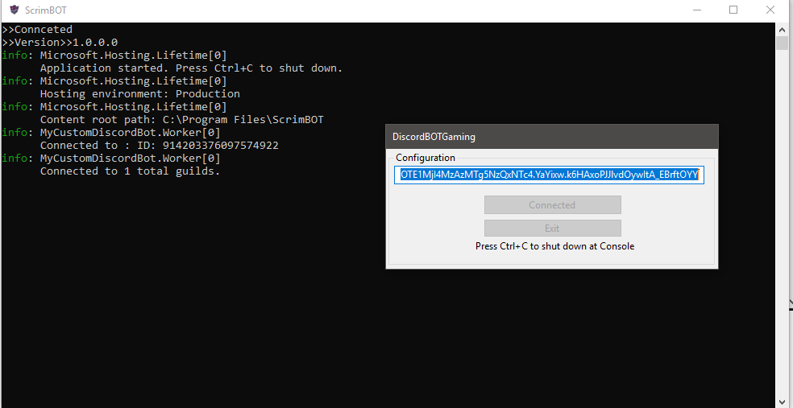
Discord Developer Mode on
With developer mode active, you can copy ID values for users, channels, and servers by right-clicking the server name, channel name, or username and selecting the “Copy ID” option.
To start, open Discord and sign in. Once you’re signed in, select the settings icon in the bottom-left corner next to your username

In Discord settings menu, select the “Appearance” option in the menu on the left.

In the “Appearance” menu, you’ll see settings that impact how Discord appears to you, with theme options, message sizes, and accessibility settings.
Scroll down to the bottom, then select the slider next to the “Developer Mode” option. If the slider is green with a checkmark, developer mode is enabled. If it’s gray with an “X” symbol, developer mode is disabled.


Set configurations
-
create category with game name ex: [Valorant Match ]
-
create text channel for Play
-
create text channel for Stats
-
create text channel for Match logs
-
create text channel for give points
-
create text channel for Chat
-
create voice channel for waiting match
-
create role for report match
create discord channels
Set channels config
-
set match category
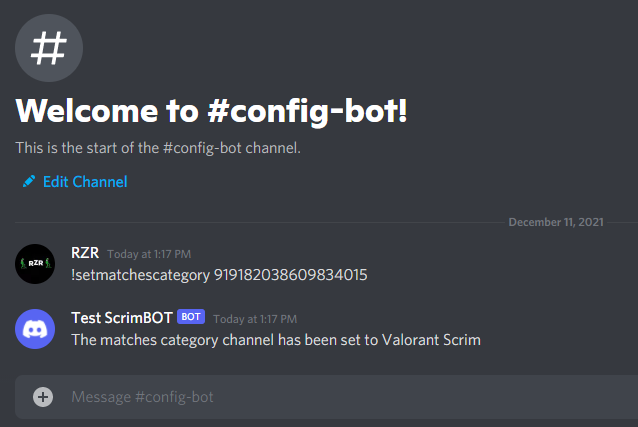
-
Set Stats Channel
-
Set Match logs
-
set waiting match to mention voice channel [ <#id>]
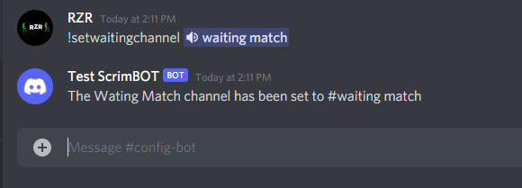
-
Set score reporter role
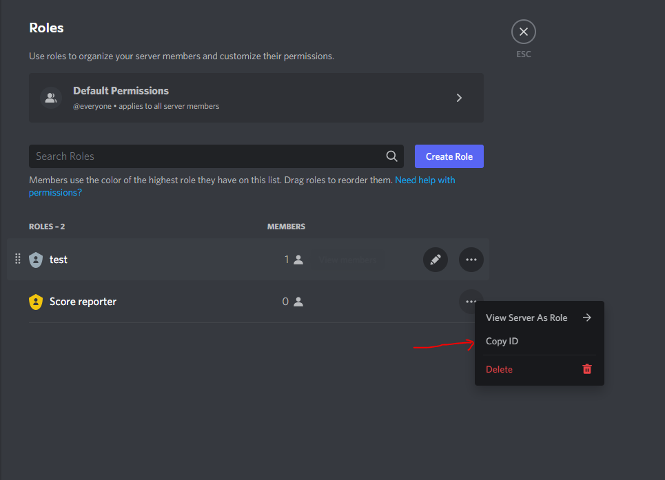
-
set max team size
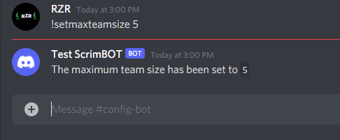
-
set win Lose amount
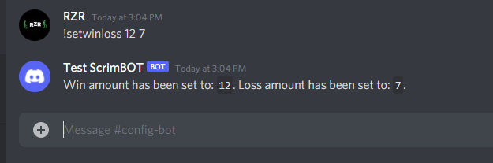